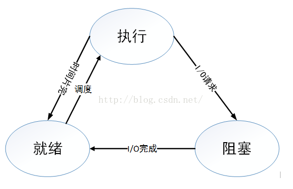

Basic
操作系统的四个特性。
并发：同一段时间内多个程序执行(注意区别并行和并发，前者是同一时刻的多个事件，后者是同一时间段内的多个事件)
共享：系统中的资源可以被内存中多个并发执行的进线程共同使用
虚拟：通过时分复用（如分时系统）以及空分复用（如虚拟内存）技术实现把一个物理实体虚拟为多个
异步：系统中的进程是以走走停停的方式执行的，且以一种不可预知的速度推进
操作系统的主要功能。
处理机管理：处理机分配都是以进程为单位，所以处理机管理也被看做是进程管理。包括进程控制，进程同步，进程通信和进程调度
存储器管理（或者内存管理）：内存分配，内存保护，地址映射，内存扩充
设备管理：管理所有外围设备，包括完成用户的IO请求；为用户进程分配IO设备；提高IO设备利用率；提高IO速度；方便IO的使用
文件管理：管理用户文件和系统文件，方便使用同时保证安全性。包括：磁盘存储空间管理，目录管理，文件读写管理以及文件共享和保护 提供用户接口：程序接口（如API）和用户接口（如GUI）
用户态和核心态的区别。
Process vs Thread
进程的有哪几种状态，状态转换图，及导致转换的事件。

运行——>就绪：1，主要是进程占用CPU的时间过长，而系统分配给该进程占用CPU的时间是有限的；2，在采用抢先式优先级调度算法的系统中,当有更高优先级的进程要运行时，该进程就被迫让出CPU，该进程便由执行状态转变为就绪状态。
就绪——>运行：运行的进程的时间片用完，调度就转到就绪队列中选择合适的进程分配CPU
运行——>阻塞：正在执行的进程因发生某等待事件而无法执行，则进程由执行状态变为阻塞状态，如发生了I/O请求
阻塞——>就绪:进程所等待的事件已经发生，就进入就绪队列
以下两种状态是不可能发生的：
阻塞——>运行：即使给阻塞进程分配CPU，也无法执行，操作系统在进行调度时不会从阻塞队列进行挑选，而是从就绪队列中选取
就绪——>阻塞：就绪态根本就没有执行，谈不上进入阻塞态。
进程与线程的区别。
进程是具有一定功能的程序关于某个数据集合上的一次运行活动，进程是系统进行资源调度和分配的一个独立单位。 线程是进程的实体，是CPU调度和分派的基本单位，它是比进程更小的能独立运行的基本单位。 一个进程可以有多个线程，多个线程也可以并发执行
进程通信的几种方式。
主要分为：管道、系统IPC（包括消息队列、信号量、共享存储）、SOCKET
管道主要分为：普通管道PIPE 、流管道（s_pipe）、命名管道（name_pipe）
管道是一种半双工的通信方式，数据只能单项流动，并且只能在具有亲缘关系的进程间流动，进程的亲缘关系通常是父子进程 命名管道也是半双工的通信方式，它允许无亲缘关系的进程间进行通信 信号量是一个计数器，用来控制多个进程对资源的访问，它通常作为一种锁机制。 消息队列是消息的链表，存放在内核中并由消息队列标识符标识。 信号是一种比较复杂的通信方式，用于通知接收进程某个事件已经发生。 共享内存就是映射一段能被其它进程访问的内存，这段共享内存由一个进程创建，但是多个进程可以访问。
进程同步的几种方式
原子操作、信号量机制、自旋锁管程、会合、分布式系统
进程调度算法。
- 时间片轮转调度算法（RR）：给每个进程固定的执行时间，根据进程到达的先后顺序让进程在单位时间片内执行，执行完成后便调度下一个进程执行，时间片轮转调度不考虑进程等待时间和执行时间，属于抢占式调度。优点是兼顾长短作业；缺点是平均等待时间较长，上下文切换较费时。适用于分时系统。
- 先来先服务调度算法（FCFS）：根据进程到达的先后顺序执行进程，不考虑等待时间和执行时间，会产生饥饿现象。属于非抢占式调度，优点是公平，实现简单；缺点是不利于短作业。
- 优先级调度算法（HPF）：在进程等待队列中选择优先级最高的来执行。
- 多级反馈队列调度算法：将时间片轮转与优先级调度相结合，把进程按优先级分成不同的队列，先按优先级调度，优先级相同的，按时间片轮转。优点是兼顾长短作业，有较好的响应时间，可行性强，适用于各种作业环境。
- 高响应比优先调度算法：根据“响应比=（进程执行时间+进程等待时间）/ 进程执行时间”这个公式得到的响应比来进行调度。高响应比优先算法在等待时间相同的情况下，作业执行的时间越短，响应比越高，满足段任务优先，同时响应比会随着等待时间增加而变大，优先级会提高，能够避免饥饿现象。优点是兼顾长短作业，缺点是计算响应比开销大，适用于批处理系统。
Lock
死锁的概念，导致死锁的原因。
在两个或者多个并发进程中，如果每个进程持有某种资源而又等待其它进程释放它或它们现在保持着的资源，在未改变这种状态之前都不能向前推进，称这一组进程产生了死锁。通俗的讲就是两个或多个进程无限期的阻塞、相互等待的一种状态。
导致死锁的四个必要条件。
死锁产生的四个条件（有一个条件不成立，则不会产生死锁）
互斥条件：一个资源一次只能被一个进程使用 请求与保持条件：一个进程因请求资源而阻塞时，对已获得资源保持不放 不剥夺条件：进程获得的资源，在未完全使用完之前，不能强行剥夺 循环等待条件：若干进程之间形成一种头尾相接的环形等待资源关系
处理死锁的四个方式。
预防死锁、避免死锁、检测死锁、解除死锁
解决四多的常用策略如下：
鸵鸟策略、预防策略、避免策略、检测与解除死锁
预防死锁的方法、避免死锁的方法。
- 忽略该问题。例如鸵鸟算法。
- 检测死锁并且恢复。
- 仔细地对资源进行动态分配，以避免死锁。
- 通过破除死锁四个必要条件之一，来防止死锁产生。
鸵鸟算法：
该算法可以应用在极少发生死锁的的情况下。为什么叫鸵鸟算法呢，因为传说中鸵鸟看到危险就把头埋在地底下，可能鸵鸟觉得看不到危险也就没危险了吧。跟掩耳盗铃有点像。
银行家算法：
所谓银行家算法，是指在分配资源之前先看清楚，资源分配后是否会导致系统死锁。如果会死锁，则不分配，否则就分配。
Paging and Memory
内存连续分配方式采用的几种算法及各自优劣。
基本分页储存管理方式。
基本分段储存管理方式。
分段分页方式的比较各自优缺点。
几种页面置换算法，会算所需换页数
虚拟内存的定义及实现方式。